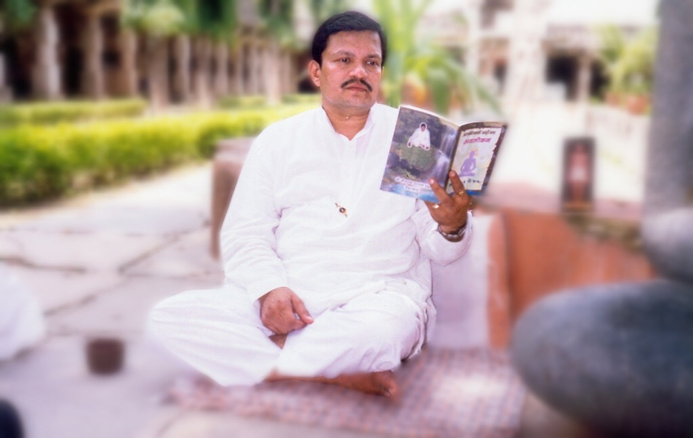

Shri Devchand bhai Shah
દેવચંદ કે. શાહ · Discourses 1996–2002
He was not a monk. He held no title and founded nothing. He was a householder who took the question of his own liberation seriously enough to work at it every day, and who then spent the last years of his life explaining, to anyone who would sit and listen, exactly what he had found.
At fourteen he met Gurudevshri Kanjiswami, and decided then that spirituality would be his way and Samyak Darshan his goal. Kanjiswami remained his guru until his death in 1980.
What followed was sixteen years of searching for the path itself. Not doubt about the goal — he had settled that as a boy — but the practical question of how a person actually gets there. That search ended on 14 January 1996.
The archive bears this out with a plainness that is hard to miss. Of more than twelve hundred recorded sittings, three were recorded before that date. The rest come after. He began teaching six weeks later, and did not stop for the remaining six years of his life.
What he left is two things: a book, and about eleven hundred hours of recorded discourses.
Avlokan
The book is Avlokan — આત્મ નિરીક્ષણની અનૂઠી કળા, "the unique art of self-observation." It is short, and it is written as numbered points rather than chapters — a hundred and twelve of them, each stating one thing plainly and moving on.
Its subject is a single practice. Avlokan is the observation of one's own parinaam — the states arising in oneself — in the present moment. Not reflection afterwards, not resolution beforehand. Watching, now.
He distinguishes two kinds. Trutak avlokan, the broken kind, where attention catches a fault, slips into thinking about it, and the watching breaks; one starts again, and it breaks again. This is where a seeker begins. And dharavahi avlokan, the continuous kind, which becomes possible once one has set the goal of complete freedom; here faults no longer have to be hunted, because they present themselves, and knowing grows quietly finer.
The instruction at the centre of the book is the one that most surprises people. When you see a fault in yourself, do not try to remove it.
He gives eight reasons. The fault belongs to a single moment and passes of itself. Trying to stop it is what breaks the watching, and broken watching is what produces the next fault. The effort to remove assumes you are the doer, and where there is doership there is no knowing. And the one busy removing faults does not believe himself to be faultless by nature, so the greatness of his own nature never reaches him.
ટૂંકમાં દોષનું અવલોકન તે જ્ઞાતાભાવે રહેવાનો પુરૂષાર્થ છે. તેમજ પોતાની વર્તમાન પામરદશાનું મૂલ્યાંકન છે. દોષનાં અવલોકનથી એમ માનવાનું નથી કે હું સ્વભાવે કરી દોષી છું.
In short, observing a fault is the purushartha — the self-effort — of remaining in jnata-bhaav, the disposition of the knower. It is also an honest measure of one's own present condition. Observing a fault does not mean believing "I am by nature faulty."
— aphorism 103
And the sequence the whole book rests on:
અવલોકન વિના મુમુક્ષુદશા ન પ્રગટે, ભેદજ્ઞાન વિના જ્ઞાનદશા ન પ્રગટે, સ્થિરતા વિના પરમાત્મદશા ન પ્રગટે.
Without avlokan, the mumukshu state does not become manifest. Without bhedgyan, the state of knowing does not become manifest. Without sthirata — steadiness — the state of the Paramatma does not become manifest.
— aphorism 76
The discourses
Between 1996 and 2002 he taught more than twelve hundred sittings, most of them an hour or longer, in Hyderabad, Bangalore, Mumbai, Chinchani, Pune, Taranga and Ponnur. The pace tells its own story: 38 sittings in 1996, 261 in 1999, 333 in 2001.
He rarely spoke freely. He taught texts, in order, sitting after sitting: Shrimad Rajchandra's Vachanamrut letter by letter, Samaysar, Dravya Drushti Prakash, Swanubhuti Darshan, Moksh Marg Prakashak, Parmagamsar, Apoorva Avasar, Ratnakarand Shravakachar. He drew on Kanjiswami, on Kundkund Acharya, on Sogani. A single letter might take him eleven sittings.
The manner is nothing like the book. The book is compressed and technical; the discourses are warm, conversational Hindi and Gujarati with English words dropped in wherever they fit, and he argues from ordinary life. Explaining why you are not the doer of your own mental states, he asks his listeners to count:
Look at your own bhaav. In one hour you have thought a thousand things. A thousand times a thought came, good and bad — how much of it actually happened? A thought came to slap someone. Did your hand move? Did the action come? Take the percentage — of all the bhaav you made, how many succeeded?
— 8 November 2000
The book states. The discourses persuade. They are meant to be taken together.
This archive
He died in 2002. Nothing further will be added to what he said.
These recordings have been preserved from the original tapes and discs, transcribed, and published here so that they can be found, read, searched and carried forward. The recordings remain the authority; transcripts are produced by machine and corrected by hand, and they will contain errors.
English renderings on this page are working translations, offered to open a door rather than to stand as the text. Technical terms are kept rather than replaced with approximations, because replacing them loses the teaching. Where the Gujarati and the English differ, the Gujarati is the text.
The teachings are offered freely. Copy them, re-host them, translate them.